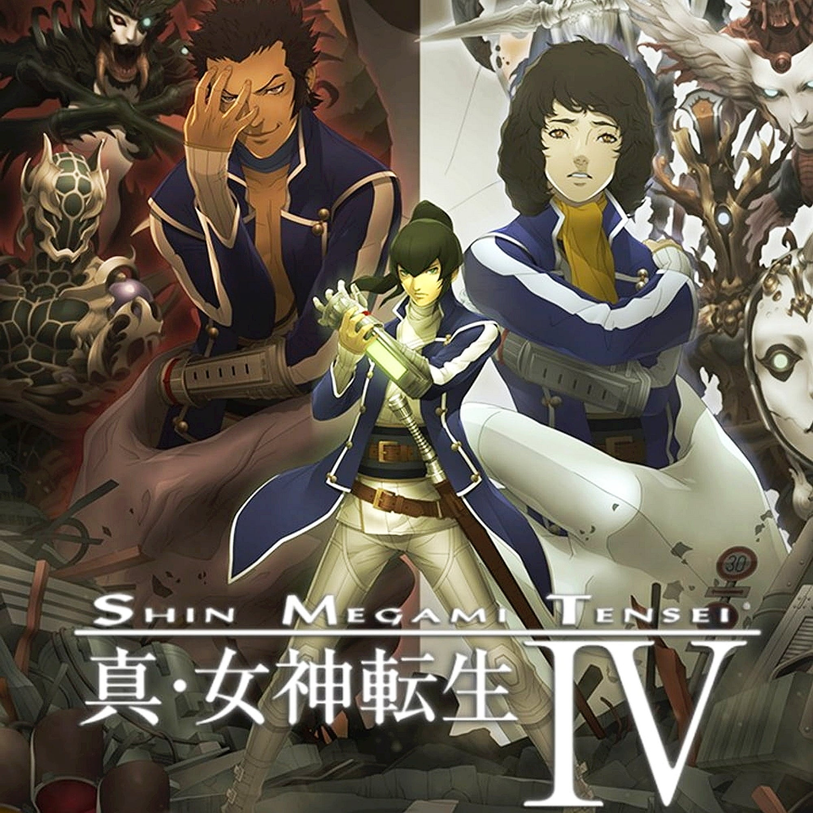
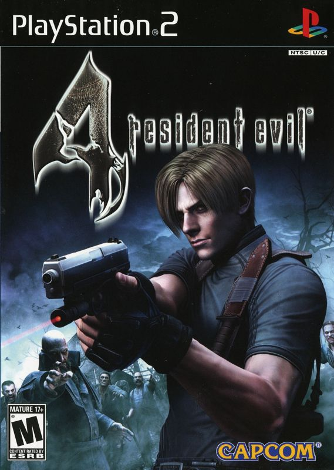

Who Are We?
 Established since July of 2002, Grandberry Interactive Entertainment is an independent game development studio sitting in the heart of New York
with a team made up of people who have a passion for the medium.
Established since July of 2002, Grandberry Interactive Entertainment is an independent game development studio sitting in the heart of New York
with a team made up of people who have a passion for the medium.
Whether you're an individual who wants to play games with deep and engaging stories,
someone who wants to play games familiar to old-school role-playing games, or someone that just wants to play
something casual and roam around in an open sandbox—
Grandberry Interactive Entertainment
is a studio that makes sure to never limit itself and to always flex its creative muscles!
What Do We Do?
Instead of following expectations set by the industry, Grandberry Interactive Entertainment's primary goal isn't to
innovate—our focus is on creating games inspired by trail-blazers of previous generations, while providing
personalized experiences of our own to inspire others.
We're all passionate about our inspriations and we make sure to never restrict ourselves to just one genre. Whether its old-school RPGs like
FINAL FANTASY or Shin Megami Tensei, rhythm games like Taiko no Tatsujin or Pop'n Music,
casual adventures with familiar characters like Super Mario or Kirby, or going to places where none but brave
souls dare to journey to like in Metroid or Resident Evil—
We always try to get inspiration from different games to help us decide what we want to
make next!
Some of Our Inspirations!





Our Mission
While having creative freedom on what we want to make can be beneficial, it could also backfire on us in many ways without the support of a community!
Everyone here at Grandberry Interactive Entertainment all feel very deeply about video games just as much as its
fans, and we believe that our players should be involved in the creative process of our games as well!
We provide our players with bite-sized demos for our players to get a taste of what our team(s) have been working on and to provide them with
feedback—for FREE!
We believe that player feedback can help with the direction of our games, and want our fans to know that we can hear their voices—loud and clear!